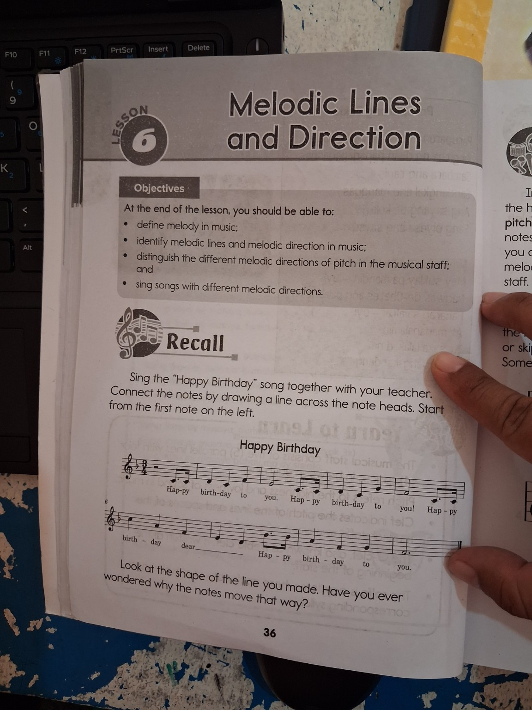
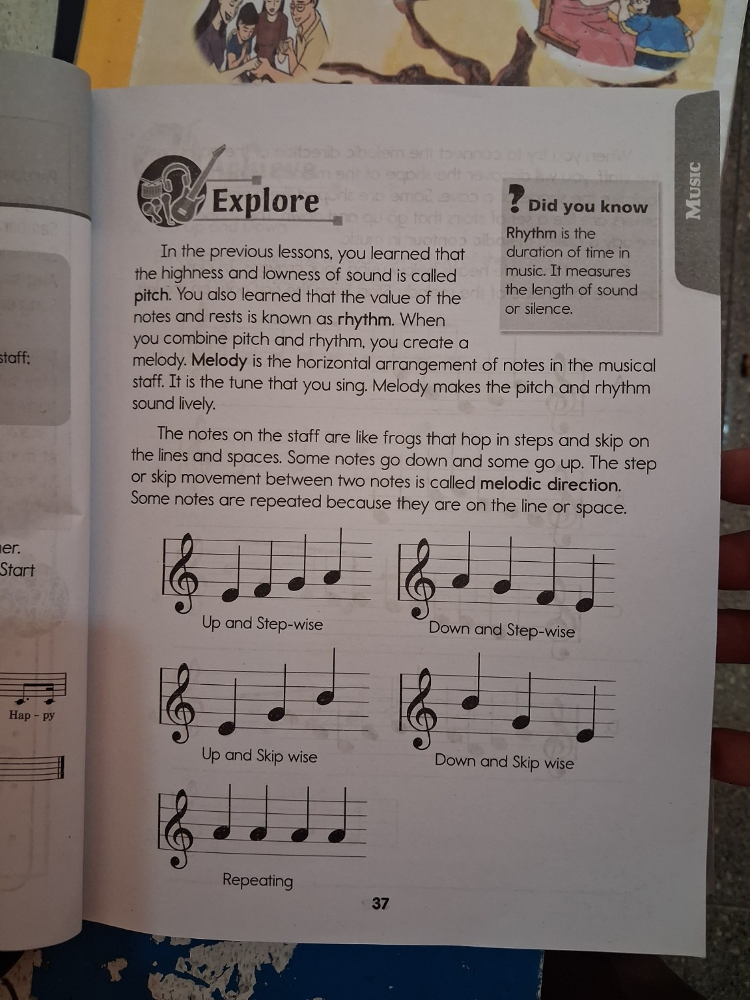
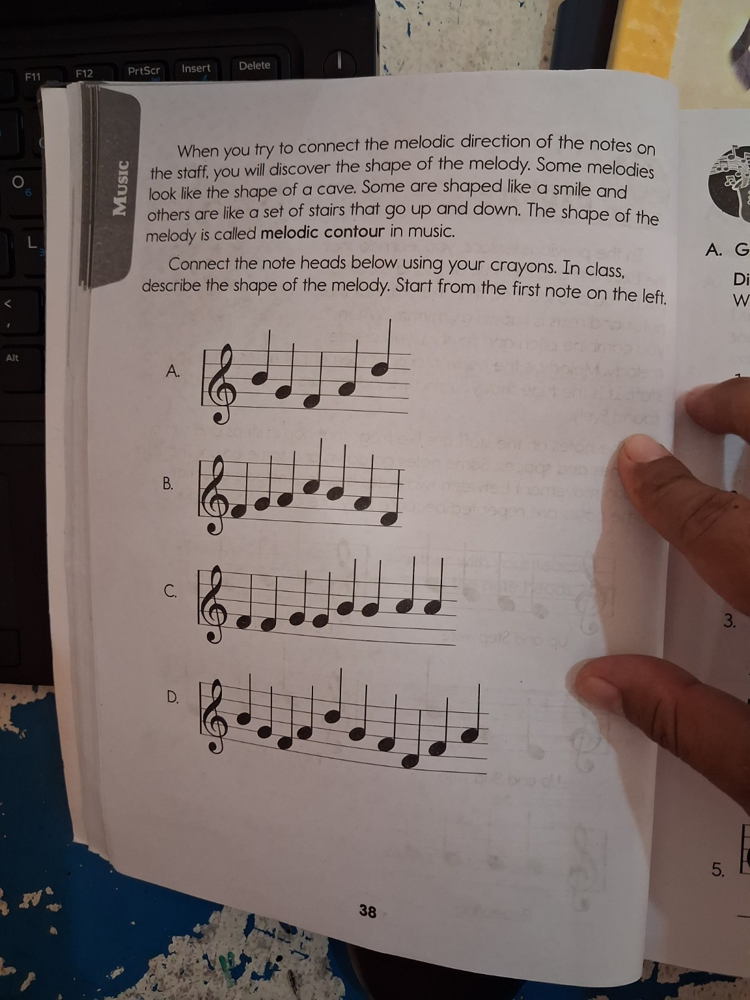
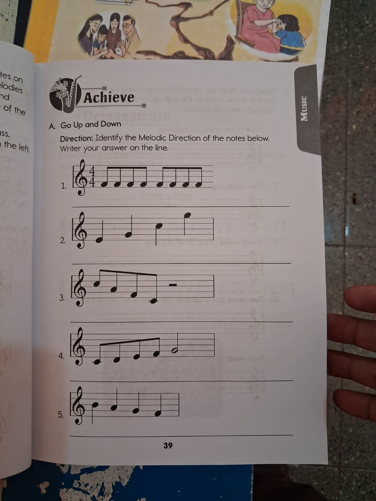
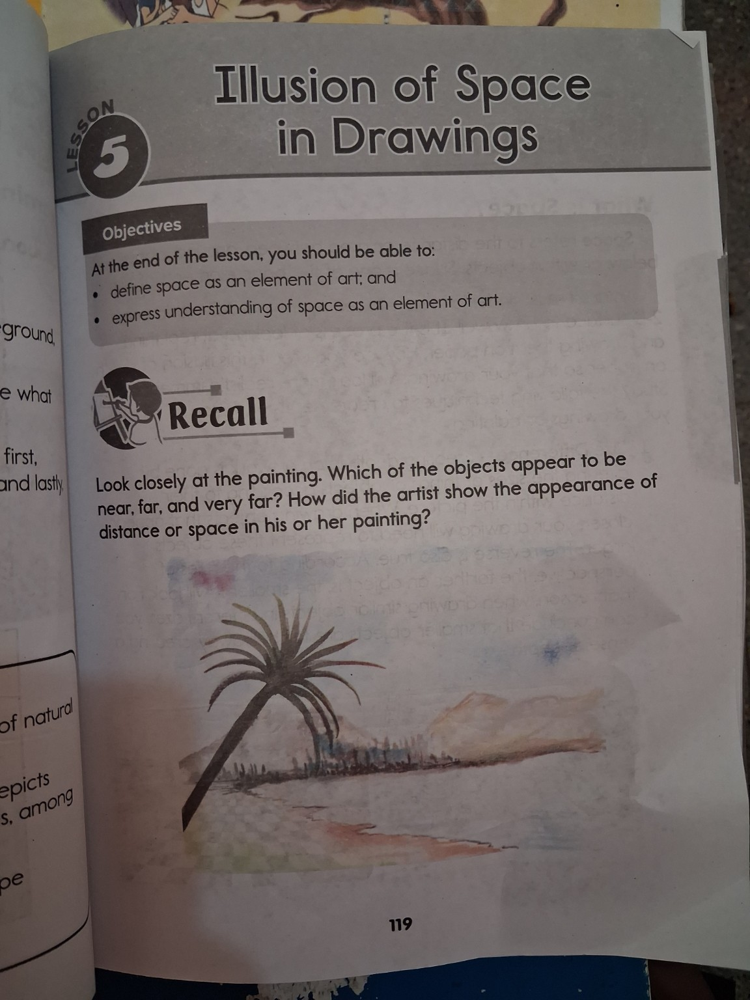
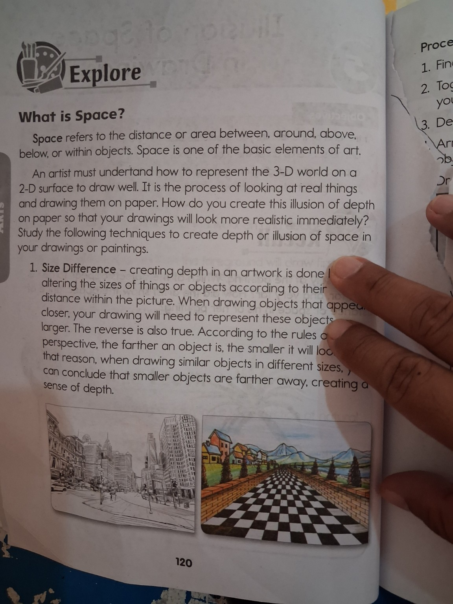
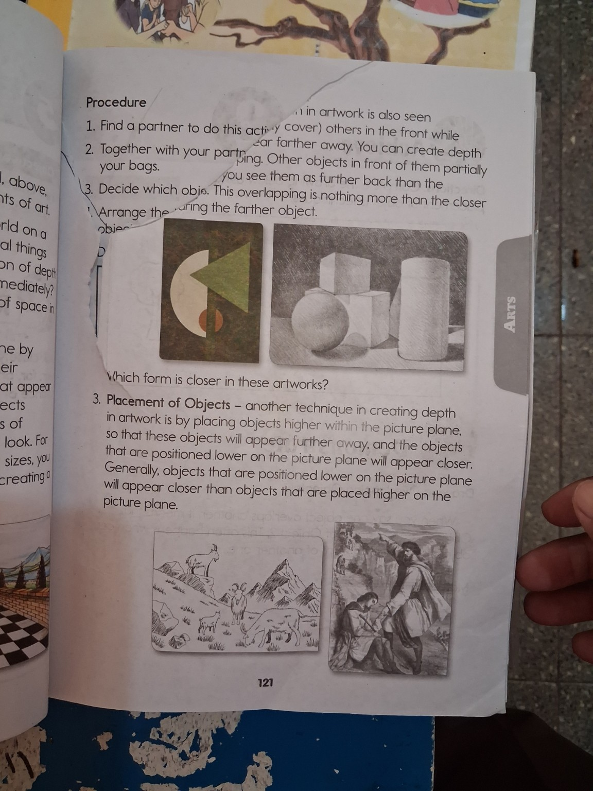

🎂 Happy Birthday Connection
Think of a song you can sing without looking at the words. What makes the song recognizable? The lesson source uses Happy Birthday to notice how notes move.
Your Turn!
Which describes pitch?

Explore two connected lessons: Melodic Lines and Direction in Music and Illusion of Space in Drawings in Arts.
Use the top navigation or Previous/Next buttons. Your completed activity checks are saved during this browser session.
Connect ideas from sound and visual art: both music and drawing can have a shape or direction that the learner can observe, describe, and use.
Date: __________ • Estimated time: 50 minutes
Think of a song you can sing without looking at the words. What makes the song recognizable? The lesson source uses Happy Birthday to notice how notes move.
Which describes pitch?
Pitch is the highness or lowness of sound. Rhythm concerns the value/duration of notes and rests—the length of sound or silence. When pitch and rhythm are combined, they create melody.
Imagine four notes with the same duration but different heights. The change in height is a change in pitch. Now imagine notes at the same height but with different durations. That difference belongs to rhythm.
Put the ideas together. Select the best word.
Prompt: “The tune that you sing” is the ______.
Why can two sequences of notes sound different even when their rhythm is similar?
Complete: “Pitch is ______; rhythm is ______; melody is ______.”
Date: __________ • Estimated time: 50 minutes
The source compares notes on the staff to frogs that hop in steps and skip on lines and spaces. Look at the “shape” a sequence of notes would make if you connected their note heads.
If the notes move from low to high, is the direction generally up or down?
Read each pattern conceptually.
Choose the description for each sequence.
The source calls the overall shape of a melody its melodic contour. A contour may look like a cave, a smile, or stairs that go up and down.
Why is connecting note heads useful?
What is the difference between step-wise and skip-wise movement?
Date: __________ • Estimated time: 50 minutes
Look at a landscape. A large palm tree appears near, while smaller trees and mountains appear farther away. Ask: “How did the artist make your eyes feel distance?”
Which is a basic element of art discussed in this lesson?
Space refers to the distance or area between, around, above, below, or within objects. It is one of the basic elements of art.
Artists represent a three-dimensional world on a two-dimensional surface. Techniques can create an illusion of depth, making a drawing look more realistic.
Study three visual clues: size, overlapping, and placement. Before checking the answer, explain what your eyes notice.
Choose the technique shown by the situation.
Situation: “The same kind of tree is drawn large in front and small in the distance.”
Why can changing the size of similar objects create a sense of depth?
Define space in art in your own words.
Date: __________ • Estimated time: 50 minutes
Imagine two similar houses. One is large at the bottom of the picture; the other is smaller and higher. Which appears closer?
1. Size Difference: farther similar objects look smaller.
2. Overlapping: a closer object can partially cover a farther object.
3. Placement of Objects: objects higher in the picture plane generally appear farther away, while lower objects generally appear closer.
Tap a clue to place it into a category.
In music, connecting note heads can reveal a melodic contour. In art, looking at object size, overlap, and placement helps reveal depth/space. Both ask you to look for a meaningful pattern.
What do both activities train you to do?
Name one technique you would use to make a distant tree look farther away.
Date: __________ • Estimated time: 50 minutes
Answer these without looking back: What is melody? What is melodic direction? What is space in art? Name one depth technique.
1) A sequence goes low → higher → highest. Direction?
2) Similar objects get smaller toward the distance. Technique?
3) Notes stay on the same line/space. Direction?
Choose the best answer for each.
Finish: “I used to think ______. Now I understand ______.”
Answer all items, then press Submit / Check Answers.
These are the user-provided lesson pages used as the content basis for this reviewer.






